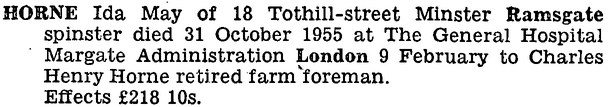
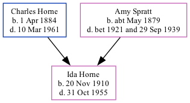

Ida May Horne 1910 - 1955
[ Home ] | [ Calendar ] | [ Surnames Index ] | [ Family History ]The daughter of Charles Horne (a market gardener worker) and Amy Spratt, Ida Horne, the first cousin once-removed on the father's side of <a href="I1.html">Nigel Horne</a>, was born in Haine, Thanet, Kent, England on Nov 20, 1910<span class="citation">1,2,3</span>.</p><p>Ida spent all of her life in Kent, England. Throughout her life, she lived in several places around the county: at Walnut Tree Cottages, Haine, Thanet, Kent, England on Apr 2, 1911<span class="citation">6</span>; at Sacketts Hill Farm, St Peters in Thanet on Jun 19, 1921<span class="citation">7</span>; on Refectory House, Tothill Street, Minster in Thanet on Sep 29, 1939<span class="citation">2</span>; and at 18 Tothill Street, Minster in Thanet in 1955 (when she was living with her father, Charles Henry). 1939 Civilian Role: Air Raid Precautions in 1939. <p>She died on Oct 31, 1955 in Margate General Hospital, Margate, Kent<span class="citation">4,5</span>.
Parents
- Charles Henry was born on Apr 1, 1884
- Amy was born c. May 1879
Citations
- 1911 England Census Online publication - Provo, UT, USA: Ancestry.com Operations, Inc., 2011.Original data - Census Returns of England and Wales, 1911. Kew, Surrey, England: The National Archives of the UK (TNA), 1911. Data imaged from the National Archives, London, England.
- 1939 Register - Findmypast (was the daughter of the head of the household)
- England & Wales, FreeBMD Birth Index, 1837-1915 Online publication - Provo, UT, USA: The Generations Network, Inc., 2006.Original data - General Register Office. England and Wales Civil Registration Indexes. London, England: General Register Office. © Crown copyright. Published by permission of the Cont
- England & Wales Government Probate Death Index 1858-2019 - Findmypast
- England & Wales deaths 1837-2007 - Findmypast
- 1911 Census for England & Wales - Findmypast (was age 0 and the daughter of the head of the household)
- 1921 Census Of England & Wales - Findmypast (was age 10 and the daughter of the head of the household)
Media
Ida May Horne - probate

1939 Register Transcription - TNA-R39-1820-1820E-007-15
England & Wales deaths 1837-2007 - BMD/D/1955/4/AZ/000483/075
1911 England, Wales - GBC-1911-RG14-04511-0115-3
1939 Register Transcription - TNA-R39-1820-1820E-007-17
1911 England, Wales & Scotland Census Transcription - GBC-1911-RG14-04511-0115-4
1939 Register Transcription - TNA-R39-1820-1820E-007-16
England & Wales Government Probate Death Index 1858-2019 - GBOR/GOVPROBATE/C/1956-1956/00102237
Family Tree
Generated by Ged2Site. Last updated on Jul 20, 2025